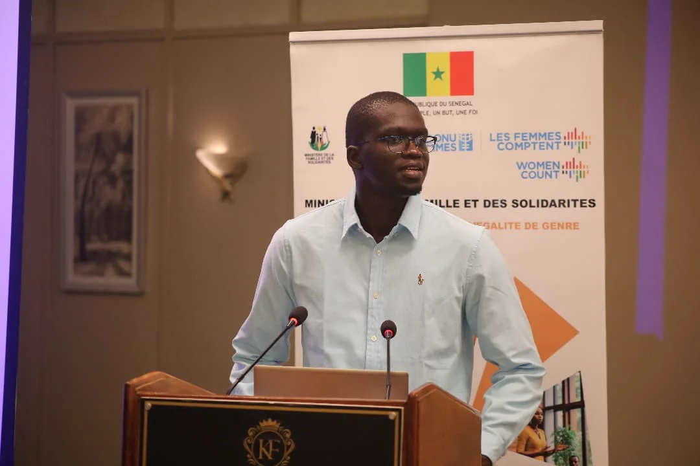
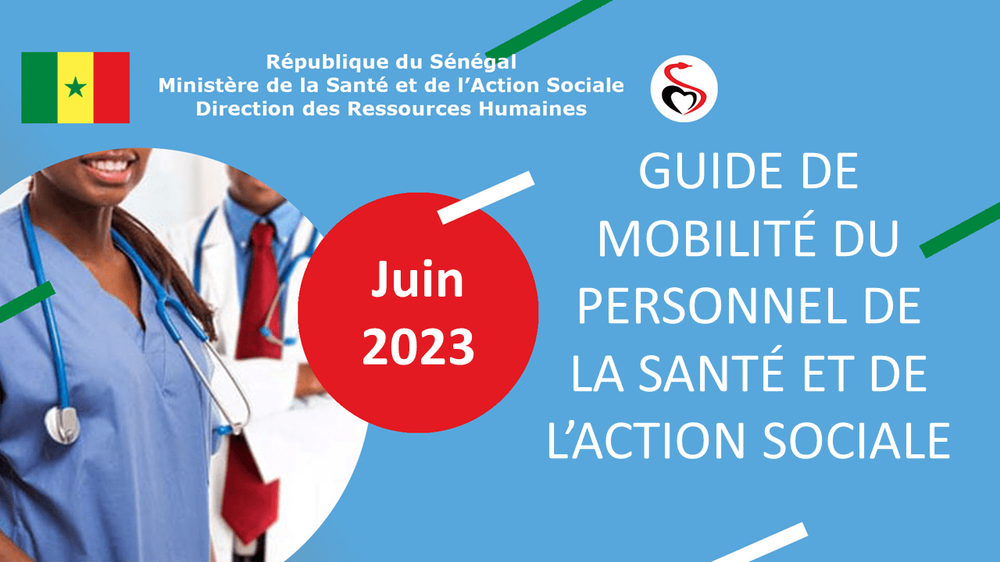

Enjeu
Les services publics reposent sur des systèmes hétérogènes, des référentiels distincts et des données qui doivent circuler dans un cadre sécurisé et gouverné.
Le travail consiste à rapprocher exigences institutionnelles, standards d’échange et architectures réalistes, sans dissocier la technologie des responsabilités de gouvernance.
PINS / X‑Road
Contribuer à l’interopérabilité nationale
Participation à la mise en place de la Plateforme d’Interopérabilité Nationale du Sénégal, basée sur X‑Road, avec les acteurs institutionnels concernés.
Cette expérience apporte une compréhension concrète des échanges entre systèmes publics, de la sécurisation des flux et de l’alignement aux cadres nationaux.
Données de santé
Relier DHIS2, iHRIS et l’ERP X3
Travail mené avec la DSISS sur une plateforme d’échange de données destinée à unifier des flux issus de DHIS2, iHRIS et de l’ERP X3.
L’approche s’appuie sur HL7 FHIR pour structurer l’interopérabilité et fiabiliser l’usage croisé des données de services et des ressources humaines.
Plateforme GouvNum
Transformer une ambition nationale en cahier des charges
Mobilisé en 2025 par GOPA pour le projet Goin’ Digital de la GIZ, en qualité d’Expert national en solutions digitales pour le secteur public.
La mission a porté sur l’élaboration du cahier des charges de la future Plateforme GouvNum, destinée à soutenir la gouvernance et le pilotage des programmes et projets numériques de l’État, avec les cadres GovStack et l’architecture d’entreprise gouvernementale.
Documents stratégiques
Des références pour planifier et décider
Contribution au Plan Directeur du Système d’Information Sanitaire, au Guide de mobilité du personnel, à la Cartographie des métiers, à l’Annuaire statistique RH et au Rapport sur les Comptes Nationaux des Personnels de Santé.
Ces travaux associent qualité des données, indicateurs, connaissance du système de santé et production documentaire institutionnelle.

